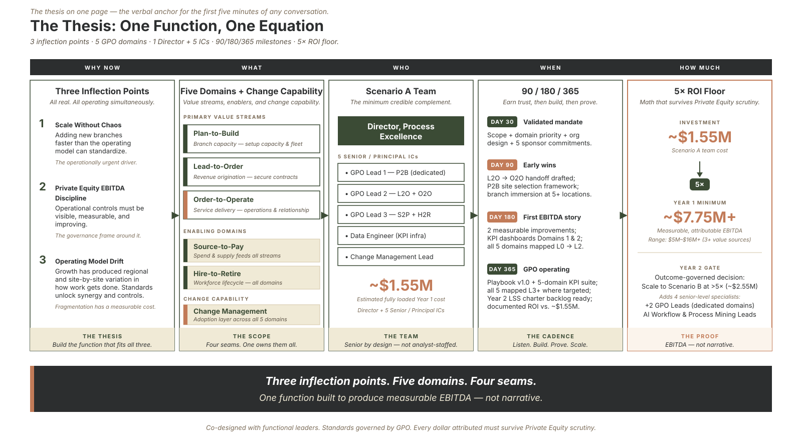
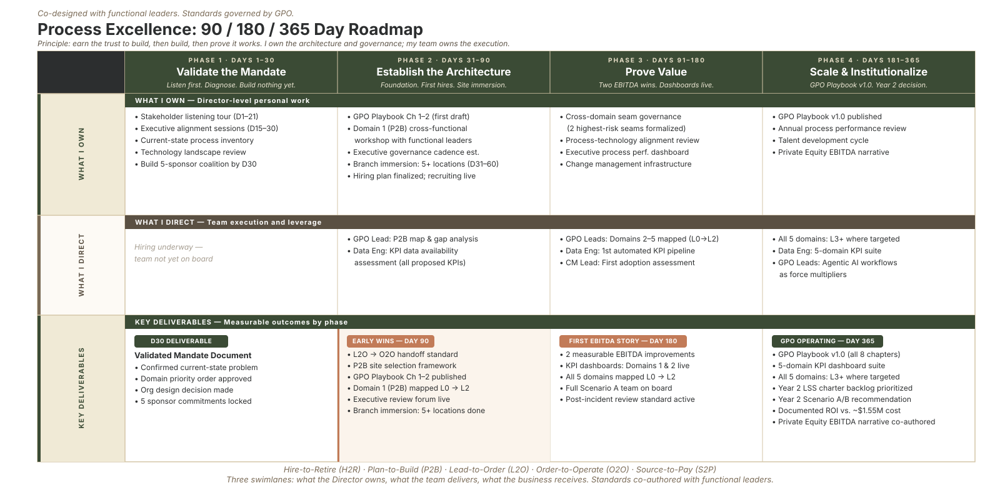

From 2014 to 2016, Verizon's Wireline and Wireless IT organizations were integrating, and each still ran its own version of every shared process. With two or more variants of each one and no single future state, nobody could govern service management the same way across both. Verizon called the work of bringing them together oneness. Over those two years I documented about 20 current-state variants and facilitated their owners to about 10 unified future-state processes.
That work comes back to me whenever I think about a harder version of the same problem:
How would you build a zero-to-one Process Excellence and Global Process Ownership function inside a high-growth, private-equity-backed company, and provide leadership across five end-to-end process domains: Plan-to-Build, Lead-to-Order, Order-to-Operate, Source-to-Pay, and Hire-to-Retire?
This series is how I'd approach building a GPO function from zero to one in a company like that: a PE-backed rollup that buys three or four firms a year and is trying to run them as one company. Picture it with no existing team and no standards to inherit. The board expects the function to pay for itself in hard dollars. Each of the five value chains cuts across every department in the company, and the leadership team is already at capacity running the business that exists today.
The question is ambiguous on purpose, and how you answer it tells a hiring committee, a sponsor or a board more than a list of certifications does. Let's walk through the reasoning one decision at a time: how I'd think it through and how I'd structure the function.

The Global Process Ownership (GPO) Thesis: Domain governance, core phases, and value-creation targets.
Context
A company to make this concrete
I'll use one composite company through the series, the way the Forest and Trees series uses baking brownies.
Meet Meridian Field Services, a PE-backed platform rolling up regional commercial mechanical-services firms (the companies that install and maintain the HVAC and mechanical systems inside large buildings). Meridian buys three or four companies a year, stands up new branches, and is trying to operate them as one company instead of a dozen that happen to share a logo. It is the oneness problem again, across a dozen companies instead of two organizations.
Meridian has all five domains:
- Plan-to-Build: opening new branches and building service capacity
- Lead-to-Order: originating and closing commercial service contracts
- Order-to-Operate: delivering the work and servicing the relationship for its life
- Source-to-Pay: buying equipment, parts, and subcontracted labor at scale
- Hire-to-Retire: recruiting, certifying, and retaining a skilled-technician workforce
Meridian is fictional, but if you've worked inside a company growing faster than its operating model can standardize, you already know the friction Meridian feels: handoffs that drop, the same problem solved five different ways in five locations, and a number on the board's dashboard that nobody trusts.
The instinct, when you're handed this mandate, is to walk in on Day 1 with a finished framework and start executing it. I'd resist that instinct, because a framework built before anyone has listened rests on my assumptions instead of the company's problems.
Here is how I'd approach it, in three movements and in this order: earn the trust to build, build, then prove it works.
Diagnosis
First: diagnose the mandate before you design anything
Before I drew a single process map, I'd need an answer to one question: what problem is this company hiring this function to solve? The answer governs what to build first, who to hire and how hard to push.
At Meridian, the surface answer is "standardize our processes." Underneath, there are usually two or three forces at once: a scaling problem (the operating model is being stress-tested faster than it can adapt), a financial-discipline problem (the sponsor needs operational performance that is measurable and improving) and an organizational-moment problem (new leadership wants to put its own fingerprint on how the company runs). Which of those is most urgent changes the sequencing.
I'd treat my own plan as a set of hypotheses to validate. Every assumption would be written down and labeled by confidence. Is this function greenfield, or are there informal process owners I haven't met yet? Does the company want enterprise standardization, or does it value local autonomy more than it admits? Which of the five domains hurts most right now? Then I'd spend the first thirty days listening, one-on-one with the leaders who own the work, to confirm or kill each assumption before committing resources to it.
Part 1 of this series goes deep here.
Architecture
Second: architect the function around standards
The Global Process Owner role is easy to misunderstand, so let's define it.
A GPO does not own the people, the budget, or the execution of a domain. The branch managers, the sales leaders and the procurement team keep owning the work. What the GPO owns is the standards, the handoffs, and the performance measures that govern how work flows through the domain end to end. The GPO owns the architecture, and the functional leaders own the execution. When that line blurs, the function gets resented and routed around.
To build that architecture, I'd decompose each domain the way I teach it in the How to See the Forest and the Trees series: from the full value chain (L0, the forest) down through its major activities (L1) and into the sub-processes where the work happens (L2, L3 and on to Ln, the trees). Each domain is a value chain that cuts sideways across the departments on the org chart. (Part 2.)
The idea I care about most in this series is where value goes missing. Plenty of it leaks inside the boxes, through waste, defects and rework, and most process functions go after that first. The value nobody is looking for leaks at the seams between the boxes.
Inside a domain, the work is usually done by people who are good at it, and its inefficiencies are visible to someone. The failures that hide are at the handoffs: where Lead-to-Order makes a commercial promise that Order-to-Operate has to deliver, where Source-to-Pay's procurement timing becomes Plan-to-Build's schedule risk, and where Hire-to-Retire's technician pipeline does or doesn't match the ramp of new contracts. Nobody owns those seams, so the customer experiences the gap as a broken promise. Governing the seams is the fastest first win, and removing the waste inside each process is the deeper work that follows. (Part 3, the heart of the series.)
Doctrine
Third: build a function leaders ask for
An elegant process architecture means little if the organization ignores it, so adoption is the constraint that decides whether any of this works. Three principles would govern how the function behaves:
1. Service before standards. The function would operate as a service organization first. Leaders pull a process function in when its help is fast and useful, and they route around it when its value is theoretical. We'd respond in days, and no standard would be published for a process we hadn't walked through with the people doing the work.
2. Co-design, then sign. Any standard that touches operational work would be co-designed with the people accountable for it, validated on-site, and signed by them before it's published. We'd standardize up: learn from the branches doing it best and make that the model, rather than averaging everyone down to a template.
3. Respect the boundaries. We'd define what a process needs, and the functional partners would own how their systems and people deliver it. Where the lane is unclear, we'd defer.
It is the same posture I wrote about in Six Practices of Servant Leadership. When the standards need to become behavior change, the framework I reach for is ADKAR. (Parts 4 and 5.)
Scale
"So how big would you build it?"
If I were asked this in the room, my answer would be: start lean and senior, prove value, and scale only when the data justifies it.
For Meridian in Year 1, I'd want a small, senior team: a handful of principal-level specialists who can each act as a force multiplier across hundreds of people in the functional organizations, rather than a large team of junior analysts producing volume. The team would be process-excellence leads who run cross-functional teams, one specialist who builds the data infrastructure behind the measures, and one who owns adoption and change.
I'd also put a number on myself before anyone asked. My goal for the function would be at least five times its fully loaded cost in measurable, attributable improvement. A return of two to four times isn't failure, but it's the signal to assess how we can improve, because the value should be a high multiple of the investment. I'd want that bar in the room because it disciplines my own choices about where to point the team, and setting it up front earns a sponsor's trust. (Part 6.)
That goal comes from my Business Transformation years at Verizon. From 2019 to 2022 I governed and supported roughly 50 transformation initiatives for SVP-led organizations, with $455M in aggregated hard and soft benefits at 128% of target. For every initiative I built and defended a custom benefit model that translated its operational KPIs into minutes, hours and wage rates, or into contract rates, so finance could accept the number. My own builds were measured the same way: the Force-to-Load capacity model I built in house for $1.5M less than the alternative surfaced $18M to $22M in capacity variance across a 1,000-person field force.
Tooling
The operator's instinct: build the instrument
One more thing I'd bring to Meridian is the tooling.
When I model a domain (the decomposition, the seams, the KPIs at every step), a static Visio file is out of date the day after it's drawn. I want the model instrumented: every handoff a traceable connection, every activity with its own measures, and the before-and-after story for the board computed from the model instead of assembled by hand the night before the review.
That's why, alongside the writing, I'm building Forester, a tool that mechanizes this method. It is still in active development, and I've already run live engagements on it. The articles teach the thinking, and the tool makes it repeatable. I'll point to it where it's relevant as the series goes on.
Roadmap
Where this goes next
The six parts that follow go deeper into each step:
1. Validate the Mandate: diagnosing the problem before designing the solution
2. What a Global Process Owner Owns: standards, handoffs and measures, and what stays with the functional leaders
3. The Seams Are Where Value Leaks: governing the handoffs between domains
4. Building the Team: senior, lean, and AI-native by design
5. The Playbook: Service Before Standards, on why process functions get routed around, and how to avoid it
6. Earn Your Keep in EBITDA: committing to a number, and the discipline behind it

Process Excellence Program: 90 / 180 / 365 Day implementation and execution roadmap.
If you're working through a version of this right now (a company growing faster than its operating model, handoffs that keep dropping, a number on the dashboard you don't trust), where is the friction sharpest for you? I'm curious which of the five domains it shows up in first.
Next in the series: Part 1: Validate the Mandate, where we diagnose the problem before designing anything.
Meridian Field Services is a fictional composite. The approach draws on my own research into Process Excellence and Global Process Ownership, assisted by AI research tools, and on my work at Verizon: the Wireline and Wireless process integration (2014-2016), the transformation portfolio (2019-2022) and the Force-to-Load capacity model (2023-2025).